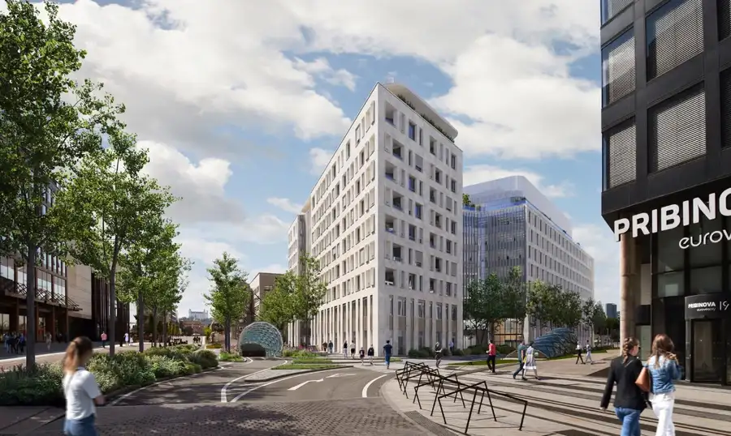
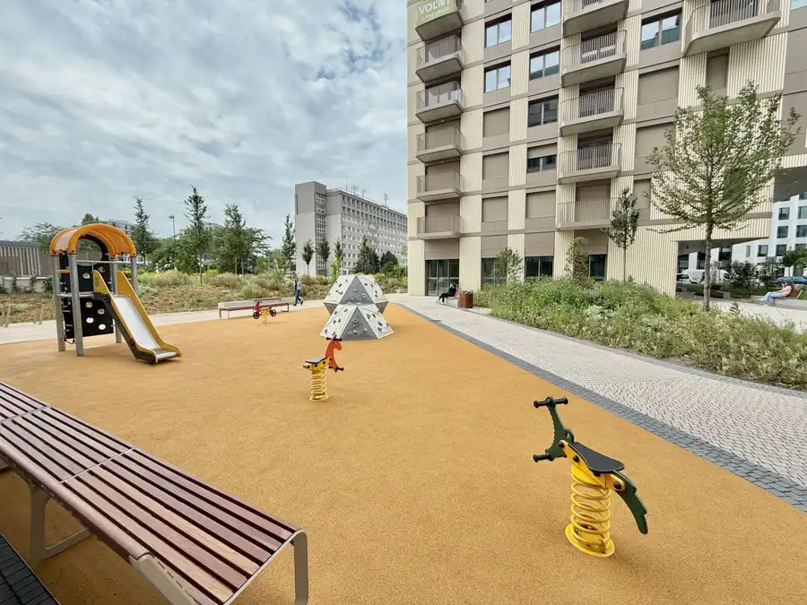
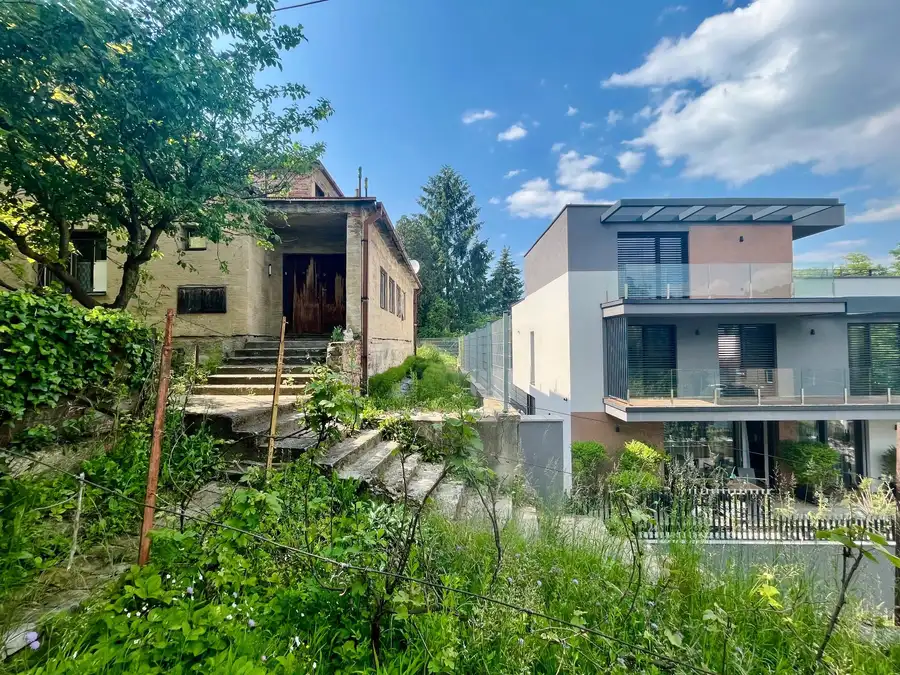

PANORAMA CITY - 3i byt s výhľadom na hrad, 26.p. 97m2, 2 kúpeľne
Staré Mesto, Bratislava
- Dispozícia3-izbový
- Plocha93.8 m²
- Poschodie26. z 33
- Vlastníctvoosobné
- Energetická triedaA
O nehnuteľnosti
Realitná kancelária NUERA Vám ponúka na predaj priestranný 3-izbový byt v prestížnej novostavbe Panorama City (Veža II). Ak hľadáte bývanie, kde nebudete robiť kompromisy medzi priestorom, komfortom a lokalitou, práve ste ho našli.
Tento byt vyniká nielen svojou štedrou rozlohou (byt 90m²+ loggia7m², kobka 4m²), ale aj dispozíciou, ktorá zahŕňa až dve plnohodnotné kúpeľne. A to všetko korunuje panoramatický výhľad na Dunaj, Bratislavský hrad a Staré Mesto priamo z 26. poschodia.
Dispozícia a priestor, ktorý dýcha:
- Denná časť: Vstupná predsieň plynule prechádza do presvetlenej obývačky spojenej s kuchyňou a jedálňou. Odtiaľ je priamy výstup na zasklenú loggiu.
- Hlavná spálňa (Master bedroom): Ponúka absolútne súkromie vďaka vlastnej kúpeľni a toalete.
- Detská izba / Pracovňa: Flexibilný priestor podľa vašich potrieb.
- Druhá kúpeľňa a samostatná toaleta: Zvyšujú komfort pre hostí alebo rodinných príslušníkov.
Byt sa prenajíma kompletne zariadený a je vyhotovený v nadštandarde, ktorý zahŕňa:
- Klimatizáciu v každej miestnosti.
- Elektrické ovládanie zasklenia loggie a vnútorné elektrické tienidlá.
- Prémiovú gresovú dlažbu a toalety s bidetovou sprškou.
O projekte a lokalite (Bratislavský Downtown):
- Ikonické bývanie: Panorama City patrí medzi najprestížnejšie rezidenčné projekty v Bratislave. Obyvateľom garantuje maximálny komfort vďaka 24/7 recepcii, vlastnej strážnej službe, rýchlovýťahom a privátnemu zelenému parku priamo pod oknami.
- Všetko na dosah ruky: V parteri budovy sa nachádzajú potraviny (YEME), kaviarne a reštaurácie. Nachádzate sa v pulzujúcom centre zóny Eurovea City – nákupné centrum, promenáda pri Dunaji, Slovenské národné divadlo (SND) či historické centrum mesta máte vzdialené len pár minút chôdze.
- Strategický bod: Výborné napojenie na obchvat a most Apollo. Lokalita je obklopená hlavnými biznis centrami (Twin City, Sky Park, Nivy), čo z nej robí ideálnu voľbu pre tých, ktorí chcú mať prácu aj spoločenský život v tesnej blízkosti.
Parkovanie:
K bytu prislúchajú 2 garážové státia
Cena:
Byt s kobkou 750.000EUR, parkovacie státie 2x 40.000EUR.
Parametre
| Celková rozloha | 100.72 m² |
|---|---|
| Úžitková plocha | 93.8 m² |
| Poschodie | 26 |
| Počet poschodí | 33 |
| Počet izieb | 3 |
| Vlastníctvo | osobné |
| Odvoz odpadu | áno - separovaný |
| Plyn | nie |
| Internet | optika |
| Kúpeľňa | vaňa a sprchovací kút |
| Vykurovanie | spoločné – vlastná kotolňa |
| Lódžia | áno |
| Pivnica | áno |
| Garáž | áno - 2 autá |
| Výťah | áno |
| Parkovanie | vnútorné |
| Postavené z | Zmiešané |
| Zariadenie | zariadený |
| Zateplený objekt | áno |
| Klimatizácia | áno |
| Káblová televízia | áno |
| Energetický certifikát | A |
| Bezbariérový prístup | áno |
| Okná | hliníkové |
| Orientácia | juhozápadná |
| Novostavba | áno |
| Dátum zverejnenia | 12. 7. 2026 |
Kde to je
Mohlo by Vás zaujímať

Byt9 Cena dohodouGANZ HOUSE - Exkluzívny 3-izbový byt v srdci Eurovea City Nivy, Bratislava 3-izbový80 m²5. podlažie Realitná kancelária NUERA vám exkluzívne ponúka na predaj nadštandardný 3-izbový byt v najočakávanejšom butikovom projekte Ganz House, situovanom v…
Byt10 449 000 €MILLHAUS - 3,5i byt, šatník + 2x balkón, parking Nivy, Bratislava 3,575 m²12. podlažie NUERA Real Estate Vám ponúka na predaj moderné bývanie v novorozvíjajúcej časti bratislavského downtownu od developerov Immocap a WOOD Real Estate.…
Pozemok10 700 000 €PREDAJ - Lukratívny pozemok so starším domom pri Horskom parku Staré Mesto, Bratislava 6-izbový220 m² Realitná kancelária Nuera Vám exkluzívne ponúka výnimočnú príležitosť na kúpu prémiového pozemku v jednej z najžiadanejších a najlukratívnejších…